Cimetière
En mémoire de ceux qui ont marqué la région, humains, Pokémon et organisations, et qui ne sont plus.
Certains ont choisi leur fin. D'autres se l'ont vue imposer. Tous ont laissé une trace dans l'histoire d'Aldreya, qu'elle soit lumineuse, sombre, ou quelque part entre les deux.
Humains
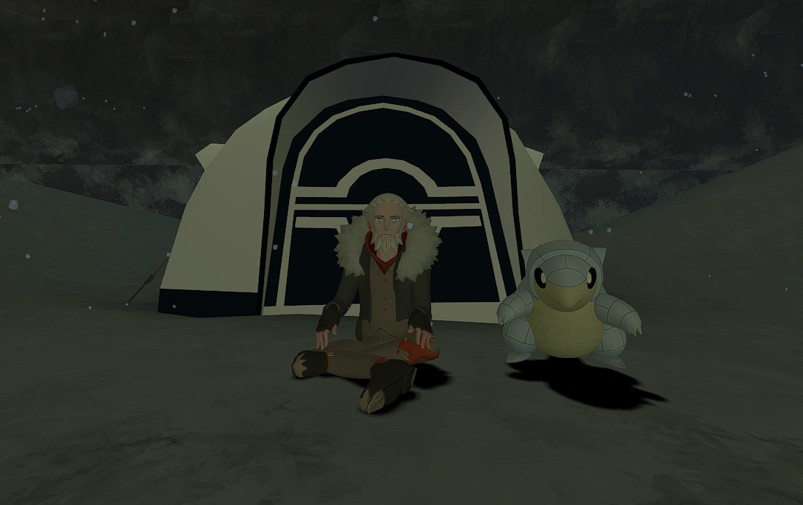
Lucian Drevos accepta pleinement le jugement du dieu renégat. Il choisit de porter sa responsabilité et demeura dans le Monde Distorsion, en quête de rédemption. Le temps s'y écoulant dans tous les sens, il y passa ce qui lui sembla des millénaires, finissant par regretter sincèrement ses actes.
Le Banni lui accorda de sortir pour réparer ses erreurs. Il s'y consacra de tout son cœur. Dans un ultime sacrifice pour sauver les habitants d'Aldreya, il fonça sur Harrisson pour en finir une bonne fois pour toutes, ce qui lui coûta la vie, un coup du puissant Hoopa en plein abdomen. Il s'excusa une dernière fois, puis ferma les yeux à tout jamais.
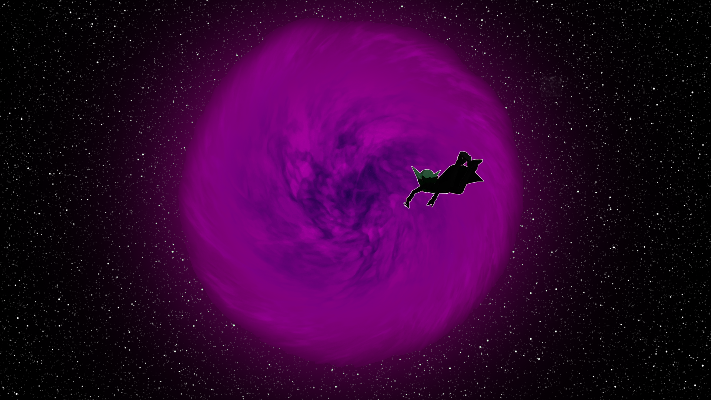
Harrisson Wilfred sombra dans la folie en croyant devenir l'égal d'un dieu. Giratina le condamna à une éternité de supplices, punition de son arrogance démesurée.
Après être revenu parmi les vivants grâce aux pouvoirs de Hoopa, il sema doutes, peur, colère et tristesse dans le cœur de nombreux habitants. Il fut finalement scellé dans la bouteille ayant autrefois contenu les pouvoirs obscurs de Hoopa, grâce au sacrifice de Lucian Drevos et à l'aide de tous les dresseurs courageux de la région.
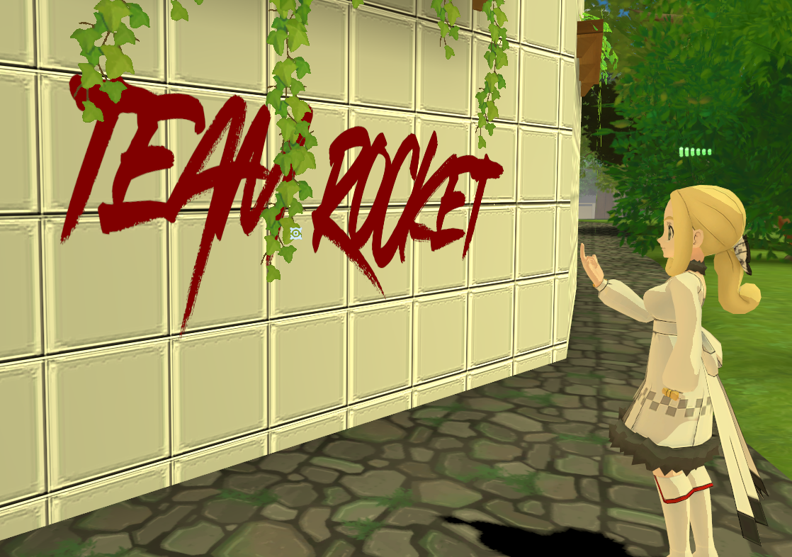
Une femme qui a toujours fait passer ses idéaux et les autres avant elle-même. Tombée lors de la tentative de libération de la Résistance au QG de la Team Rocket à Kanto, elle aura poursuivi ses convictions jusqu'à ce qu'elles la conduisent à sa propre fin.
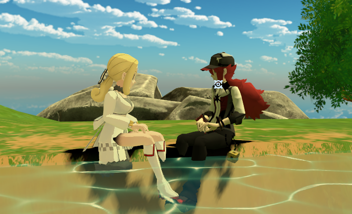
Tombé lors de la tentative de libération de la Résistance au QG de la Team Rocket à Kanto.
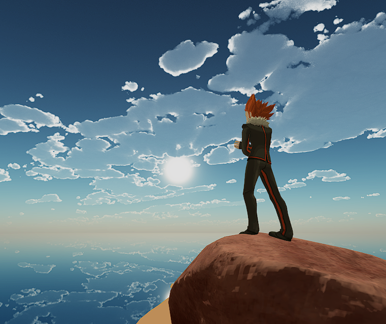
Tué lors de la tentative de raisonner la Fondation Galaxy avant qu'il ne soit trop tard.
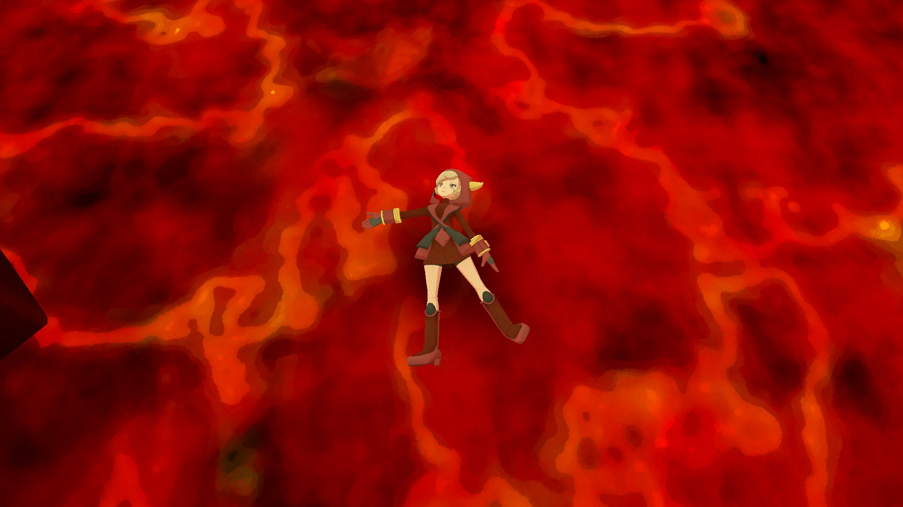
Selon les dires d'Harrisson, Flous l'aurait livrée près du volcan, où Harrisson l'aurait jetée dans la lave.
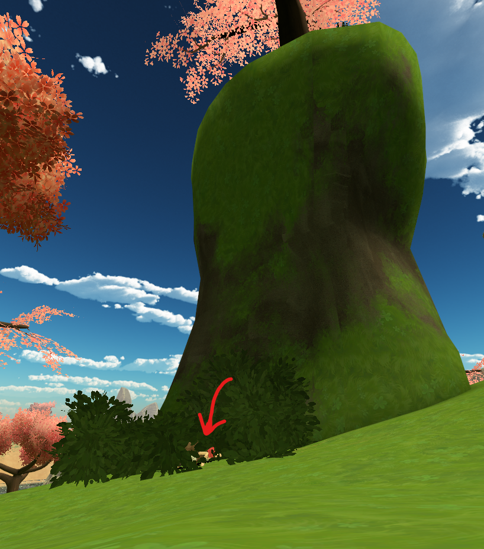
Peu d'informations subsistent sur les circonstances qui l'ont conduite à sa fin.
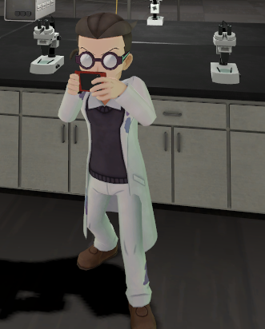
Sa mort fut atroce : il fut jeté dans une cuve d'acide.
Pokémon
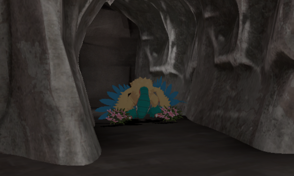
Fossile réanimée, Aelyx débuta sa nouvelle existence aux côtés de son premier dresseur, Alarion Zephyrel. Elle se fit rapidement un nom en tant que secouriste chez les Rangers, sauvant de nombreuses personnes lors d'expéditions. Elle vécut un moment marquant lorsqu'Entei, Suicune et Raikou lui offrirent une seconde chance en la ramenant à la vie.
Elle fit la rencontre de Yoshiro, avec qui elle partageait une connexion particulière et un même tempérament : foncer tête baissée. Par la suite, Aelyx devint la mère des fossiles, enseignant aux Pokémon préhistoriques la langue commune.
Sa destinée se dévoila lors de l'affrontement contre Hoopa. Elle reçut un coup mortel à l'abdomen en se sacrifiant pour la région mais, fidèle à elle-même, cacha sa blessure jusqu'au moment où elle vit enfin Yoshiro sain et sauf après sa capture par Harrisson.
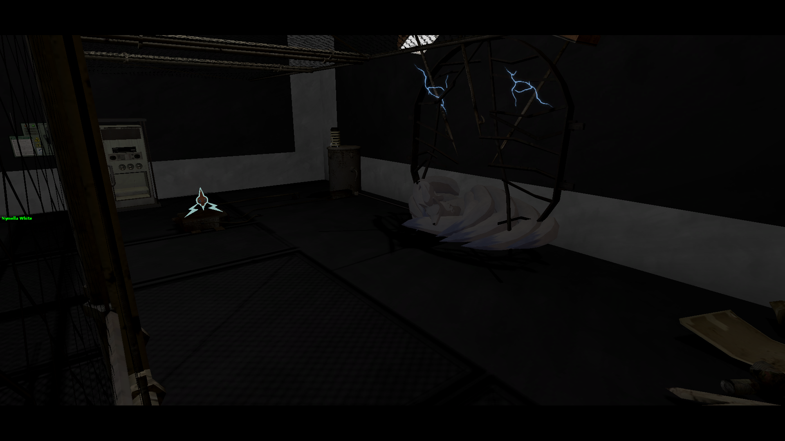
Feunard shiny à la fourrure argentée éclatante, capturé jeune par la Team Rocket. La haine finit par consumer son âme, altérant même sa nature. Son regard ne reflétait plus la lumière, seulement la colère et la souffrance. Malgré les blessures et son cœur qui faiblissait après tant d'expériences cruelles, il continua de se battre jusqu'au bout.
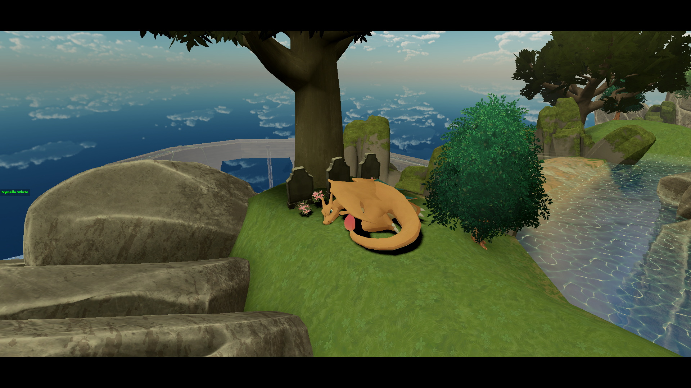
Mort de chagrin suite à la mort de ses différents dresseurs.
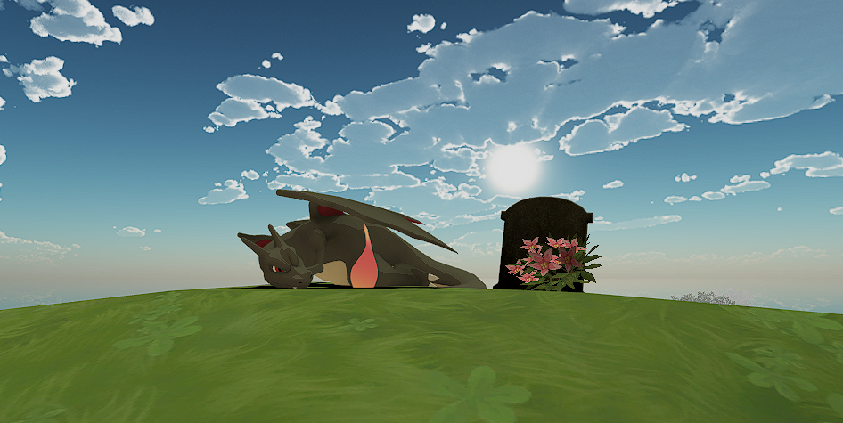
Après avoir été corrompu par la Fondation Galaxy, il trouva rédemption à la DPPA auprès de Leon Katchum. Dans un élan de rage face à la trahison, Zoldrick Manfield le tua lors du conflit final avec la Fondation Galaxy.

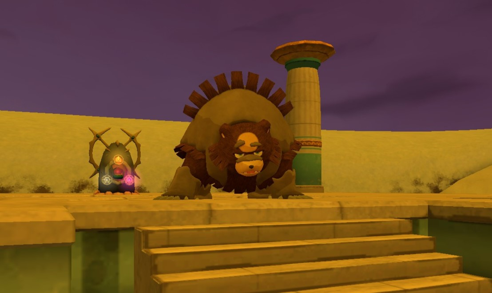
Après un combat acharné entre le gardien et Ursaring, il finit par rendre son dernier souffle dans les montagnes enneigées.

Sacrifié pour initier l'explosion de la faille artificielle du Laboratoire de la Fondation Galaxy.

Malgré les tentatives de secours, l'air manqua à Poyo, qui trépassa. Une équipe de Secours Spéléologique fut mandée par la branche Aegis, mais son sort était déjà scellé.
Factions
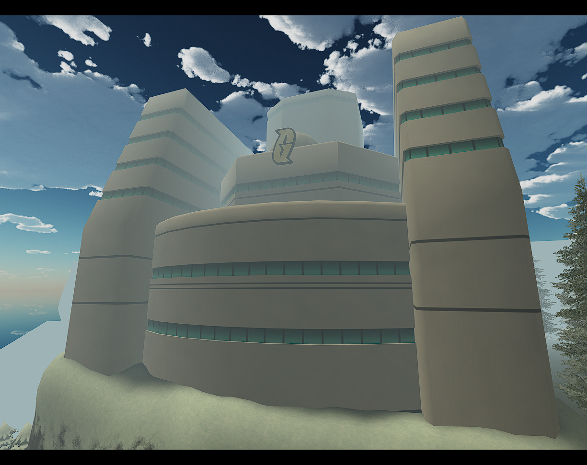
La Fondation Galaxy trouva son terme dans le Monde Distorsion, engloutie par les conséquences de ses propres ambitions. Chaque membre connut un destin marqué par ses choix. Certains tombèrent dans la folie ou la destruction, d'autres acceptèrent leur jugement et portèrent leur fardeau jusqu'au bout. La plupart ne revirent jamais le monde d'origine.
Ainsi s'acheva la Fondation Galaxy, punie par la force qu'elle tenta de défier.